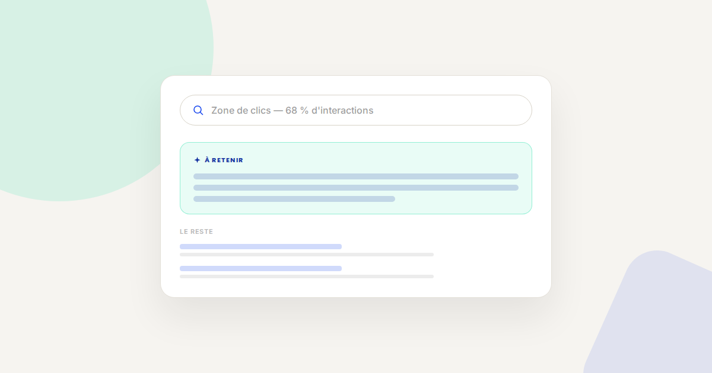
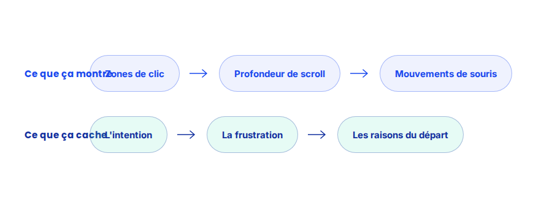

Heatmaps et analyse comportementale : ce qu'elles révèlent (et cachent)
Une carte de chaleur donne une impression immédiate de compréhension : on voit où les visiteurs cliquent, jusqu'où ils scrollent, ce qu'ils ignorent. Cette impression est trompeuse si elle n'est pas croisée avec d'autres données — une heatmap montre le où, jamais le pourquoi.

Les outils de heatmap (Hotjar, Microsoft Clarity et équivalents) se sont démocratisés, au point d'être installés sur une part importante des sites sans réelle méthodologie d'analyse derrière. Le risque n'est pas l'outil lui-même, mais l'interprétation hâtive qu'on tire de ses cartes colorées.
Ce qui ne change pas
Une heatmap reste un outil d'observation quantitative du comportement, pas un outil de compréhension des motivations. La logique rejoint celle de l'analyse comportementale au sens large : les données de comportement doivent toujours être complétées par du qualitatif — enregistrements de session, entretiens utilisateurs — pour être correctement interprétées.
Ce que les heatmaps révèlent vraiment
- Les zones réellement consultées, versus les zones supposées visibles. Une heatmap révèle souvent qu'un élément placé en évidence par l'équipe design est en réalité largement ignoré par les visiteurs, et inversement.
- La profondeur de scroll effective. Un contenu placé trop bas dans la page n'est parfois vu que par une minorité de visiteurs, une information précieuse pour prioriser l'emplacement des éléments clés.
- Les faux clics, révélateurs de confusion. Des clics répétés sur un élément qui n'est pas cliquable signalent presque toujours une attente de l'utilisateur non satisfaite par l'interface actuelle.
- Ce qu'une heatmap ne révèle jamais : le pourquoi. Elle montre qu'un visiteur a cliqué ou est parti, jamais la raison — pour ça, il faut croiser avec des enregistrements de session ou des retours utilisateurs directs.

Un exemple qui illustre bien la différence
Sur une page produit, une heatmap avait révélé un grand nombre de clics répétés sur une image qui n'était pas cliquable. Prise isolément, cette donnée ne disait rien ; croisée avec quelques enregistrements de session, elle a révélé que les visiteurs cherchaient à zoomer sur le produit — une fonctionnalité absente du site à ce moment-là, ajoutée ensuite avec un effet mesurable sur le taux de conversion de la page.
Ce qu'il faut faire concrètement
- Ne tirez jamais de conclusion d'une heatmap seule : croisez-la systématiquement avec des enregistrements de session ou des données qualitatives.
- Segmentez vos heatmaps par device et par source de trafic : le comportement d'un visiteur mobile issu d'une publicité diffère fortement de celui d'un visiteur desktop en recherche organique.
- Traitez les faux clics comme des signaux d'attente non satisfaite, pas comme des erreurs de navigation à ignorer.
- Limitez la durée de collecte à une période représentative : une heatmap agrégée sur trop longtemps dilue les évolutions de comportement liées à des changements de page ou de saisonnalité.
FAQ
Une heatmap suffit-elle pour identifier les problèmes d'une page ?
Non, elle documente des comportements observables mais n'explique jamais leurs causes. Elle doit être croisée avec des enregistrements de session ou des retours utilisateurs pour être exploitable.
Les heatmaps ralentissent-elles le site ?
Un script mal configuré ou mal chargé peut avoir un effet mesurable sur la performance. Il est recommandé de charger ces outils de façon différée et de limiter la collecte aux pages réellement pertinentes.
Quelle différence entre une heatmap de clics et une heatmap de scroll ?
La heatmap de clics montre où les visiteurs interagissent ; la heatmap de scroll montre jusqu'où ils font défiler la page. Les deux sont complémentaires et répondent à des questions différentes.
Envie d'aller plus loin dans l'analyse comportementale de votre site ?
Pour aller plus loin, voir la page Analyse comportementale, la page CRO, et la page Analytics.
Pour continuer sur ce sujet.